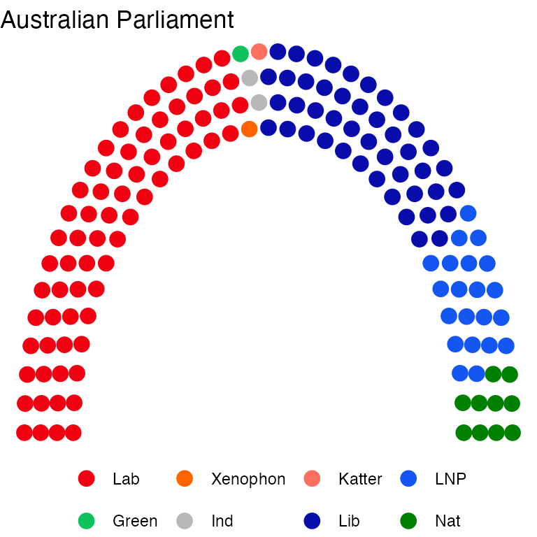
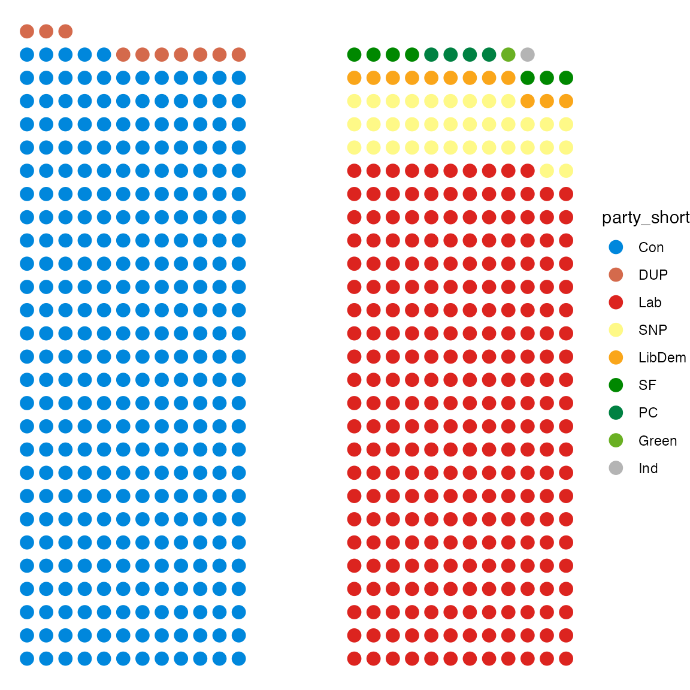
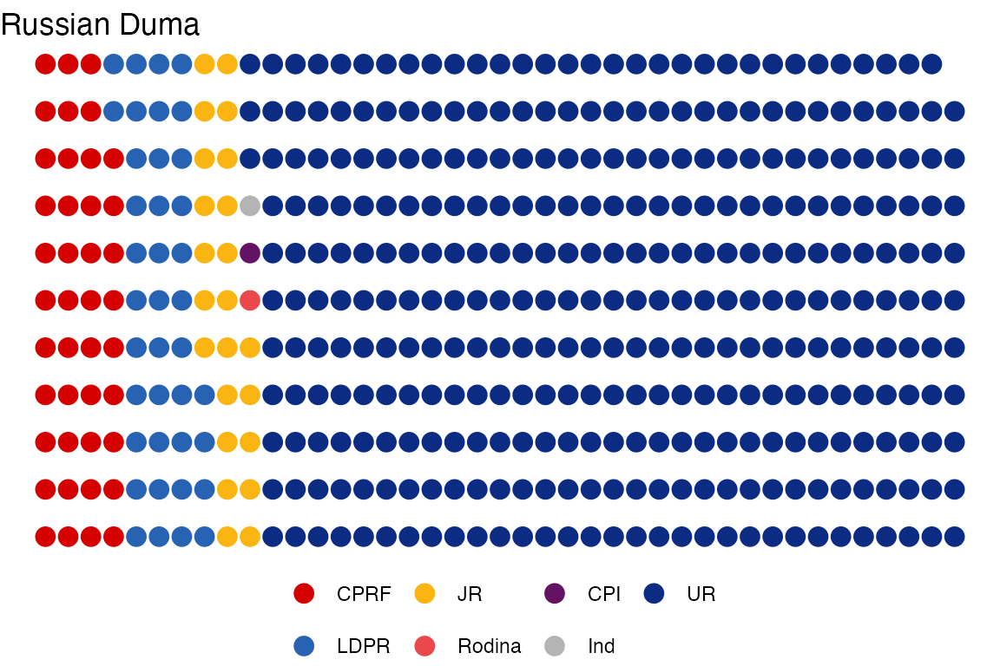

Basic Parliament Plots
Zoe Meers
2024-05-19
Source:vignettes/a_basic-parliament-plots_1.Rmd
a_basic-parliament-plots_1.RmdIntroduction to ggparliament
ggparliament is a ggplot2 extension for
creating parliament plots. This R package allows users to
plot different styles of legislatures. They are:
semicircle layouts
horseshoe parliaments
opposing bench-style parliaments
the classroom layout
a circular parliament.
To plot a parliament in ggparliament, we start with a
data frame containing the number of seats per political party. This
package comes with recent election results from the UK, Australia, the
United Sates, Russia, and Germany. election_data also
provides party colour, abbreviated and full versions of the party name,
as well as election returns over several election cycles.
Semicircle Parliament
To plot a semicircle legislature, run the following commands:
- Gather some election results.
us_rep <- election_data %>%
filter(country == "USA" &
year == 2016 &
house == "Representatives")
head(us_rep)
#> year country house party_long party_short seats government colour
#> 1 2016 USA Representatives Republican GOP 241 1 #E81B23
#> 2 2016 USA Representatives Democratic Dem 194 0 #3333FF- Input the data into
ggparliament::parliament_data.
This function unravels election results by party to individual seats. Users must define the input data frame, the type of legislature, the number of rows in the legislature, and a numeric variable which expands the number of seats to the total number of members in the legislature.
us_house_semicircle <- parliament_data(election_data = us_rep,
type = "semicircle",
parl_rows = 10,
party_seats = us_rep$seats)
head(us_house_semicircle)
#> year country house party_long party_short seats government
#> 1 2016 USA Representatives Republican GOP 241 1
#> 1.1 2016 USA Representatives Republican GOP 241 1
#> 1.2 2016 USA Representatives Republican GOP 241 1
#> 1.3 2016 USA Representatives Republican GOP 241 1
#> 1.4 2016 USA Representatives Republican GOP 241 1
#> 1.5 2016 USA Representatives Republican GOP 241 1
#> colour x y row theta
#> 1 #E81B23 -2.000000 2.449294e-16 10 3.141593
#> 1.1 #E81B23 -1.888889 2.313222e-16 9 3.141593
#> 1.2 #E81B23 -1.777778 2.177150e-16 8 3.141593
#> 1.3 #E81B23 -1.666667 2.041078e-16 7 3.141593
#> 1.4 #E81B23 -1.555556 1.905006e-16 6 3.141593
#> 1.5 #E81B23 -1.444444 1.768934e-16 5 3.141593The resulting data frame returns the x and y coordinates of each individual seat for a 10-row semicircle parliament.
- Plot the data in ggparliament
The user can take this data frame and plot by the x and y coordinates
using geom_parliament_seats().
us <- ggplot(us_house_semicircle, aes(x = x,
y = y,
colour = party_short)) +
geom_parliament_seats() +
theme_ggparliament() +
labs(colour = NULL,
title = "United States Congress") +
scale_colour_manual(values = us_house_semicircle$colour,
limits = us_house_semicircle$party_short)
us
Other parliaments are plotted using the same method. The type of parliament should change - i.e, for a horseshoe parliament, specify horseshoe and so on. There are five types - “semicircle”, “horseshoe”, “opposing_benches”, “classroom” and “circle”.
Horsehoe Parliament
australia <- election_data %>%
filter(country == "Australia" &
house == "Representatives" &
year == 2016)
australia_horseshoe <- parliament_data(election_data = australia,
party_seats = australia$seats,
parl_rows = 4,
type = "horseshoe")
au <- ggplot(australia_horseshoe, aes(x = x,
y = y,
colour = party_short)) +
geom_parliament_seats() +
theme_ggparliament() +
labs(colour = NULL,
title = "Australian Parliament") +
scale_colour_manual(values = australia$colour,
limits = australia$party_short) +
theme(legend.position = 'bottom')
au
Opposing Benches Parliament
The opposing bench style of parliament calls for a variable to split the left and right bench. Using the ggparliament election data, we split on the government column which is a binary variable.
#get the data for the last election
uk_data <- election_data %>%
filter(country == "UK") %>%
filter(year == 2017) %>% #parliament_data() can be called in a dplyr chain.
parliament_data(election_data = .,
party_seats = .$seats,
#need to include grouping for opposing benches by definition
group = .$government,
parl_rows = 12,
type = "opposing_benches")
#plot it
uk <- ggplot(uk_data, aes(x, y, colour = party_short)) +
scale_colour_manual(values = uk_data$colour, limits = uk_data$party_short) +
geom_parliament_seats() +
theme_ggparliament()
uk
Classroom parliament
russia_classroom <- election_data %>%
filter(country == "Russia" &
house == "Duma" &
year == 2016) %>%
parliament_data(election_data = .,
party_seats = .$seats,
parl_rows = 11,
type = "classroom")
rus <- ggplot(russia_classroom, aes(x,
y,
colour = party_short)) +
geom_parliament_seats() +
theme_ggparliament() +
labs(colour = NULL,
title = "Russian Duma") +
scale_colour_manual(values = russia_classroom$colour,
limits = russia_classroom$party_short) +
theme(legend.position = "bottom")
rus
Circle parliament
There are few national legislative bodies that use a circular parliament. Given that this vignette is primarily to explain how the process works, we are re-using the Russian election returns for this example.
russia_circle <- election_data %>%
filter(country == "Russia" &
house == "Duma" &
year == 2016) %>%
parliament_data(election_data = .,
party_seats = .$seats,
parl_rows = 11,
type = "circle")
russia_circle_example <- ggplot(russia_circle, aes(x,
y,
colour = party_short)) +
geom_parliament_seats() +
theme_ggparliament() +
scale_colour_manual(
values = russia_circle$colour,
limits = russia_circle$party_short) +
labs(colour = NULL) +
theme(legend.position = "bottom")
russia_circle_example
Though not suggested, data can also be plotted simply from a vector of the parties winning seats as below.
#a made up example of a vector of seats
seats <- c(rep("democrats", 40),
rep("republicans", 30),
rep("socialists", 20),
rep("nationalists", 10))
made_up_layout <- parliament_data(election_data = NULL,
party_seats = as.numeric(table(seats)),
parl_rows = 4,
type = "semicircle")
made_up_layout$party = seats
plot <- ggplot(made_up_layout, aes(x,
y,
colour = party)) +
geom_parliament_seats() +
theme_ggparliament() +
labs(colour = NULL) +
theme(legend.position = "bottom")
plot
You can also create a data frame in R and plot your
results.
house_of_reps <- data.frame(
party = c("Vacancies","Republicans", "Democrats", "Vacancies"),
seats = c(3, 236, 193, 3),
color = c("gray", "red", "blue", "gray")
)
house_of_reps <- house_of_reps %>%
mutate(party = as.character(party),
color = as.character(color)) %>%
parliament_data(election_data = .,
parl_rows = 8,
party_seats = .$seats,
type = 'semicircle')
ggplot(data = house_of_reps) +
geom_parliament_seats(aes(x = x, y = y, color = party)) +
theme_ggparliament() +
scale_color_manual(values = house_of_reps$color,
limits = house_of_reps$party)